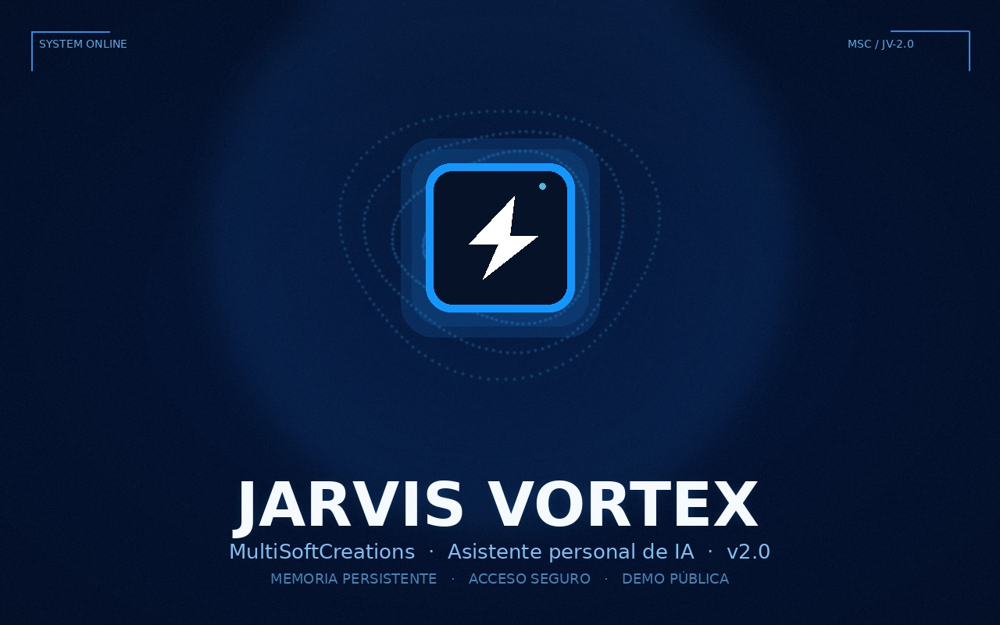
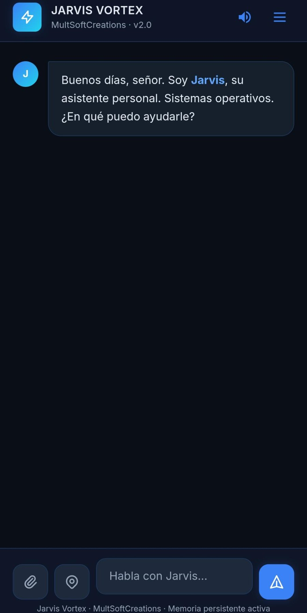
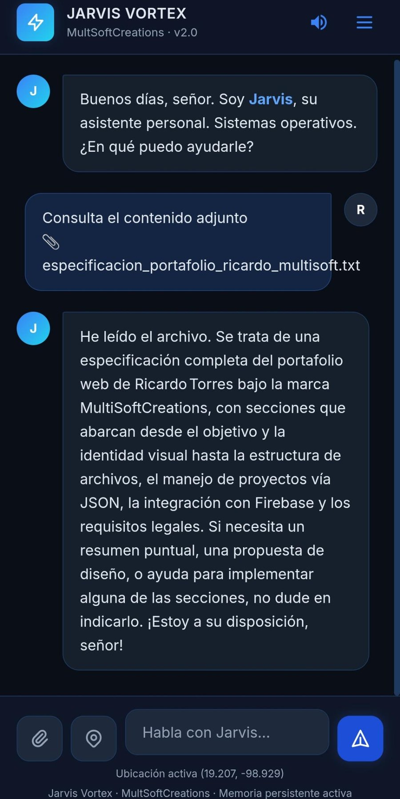
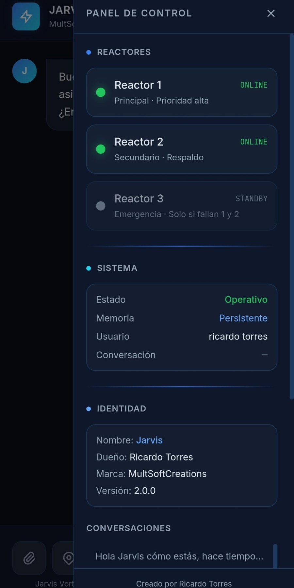

IA · Demostración · v2.0
Jarvis Vortex
Asistente personal de inteligencia artificial con memoria persistente y acceso seguro.
Descripción
Jarvis Vortex es un asistente conversacional desarrollado por Ricardo Torres bajo MultiSoftCreations. Incluye inicio de sesión con Google, memoria persistente entre sesiones, panel de control (reactores y estado del sistema) y lectura de archivos adjuntos para responder con contexto.
La demo pública está alojada en Render; la primera carga puede tardar unos segundos mientras el servicio despierta.
Capturas




Tecnologías
Python
JavaScript